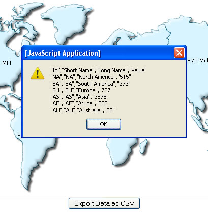

| Using JavaScript API | ||||||||||||
You can access the data of the map from its JavaScript API as well. |
||||||||||||
| Setting up the map to allow JavaScript export | ||||||||||||
When using the JavaScript API to access map data, you first need to make sure that you're invoking the getDataAsCSV() API only after the map has been rendered (i.e., in FC_Rendered event handler). |
||||||||||||
<HTML>
<HEAD>
<SCRIPT LANGUAGE="Javascript" SRC="../../Maps/FusionCharts.js"></SCRIPT>
<SCRIPT LANGUAGE="JavaScript">
function getData(){
//Get reference to the map object
var mapObj = FusionCharts("map1Id");
//Simply alert the CSV Data
window.alert(mapObj.getDataAsCSV());
return;
}
</SCRIPT>
</HEAD>
<BODY>
<CENTER>
<h2>FusionMaps XT and JavaScript - Export Data as CSV Example</h2>
<div id="map1div">
FusionMaps XT
</div>
<script language="JavaScript">
var map1 = new FusionCharts("../../Maps/FCMap_World.swf", "map1Id", "750", "400", "0", "1");
map1.setXMLData("<map borderColor='005879' fillColor='D7F4FF' numberSuffix=' Mill.' includeValueInLabels='1' labelSepChar=': ' baseFontSize='9'><data> <entity id='NA' value='515' /><entity id='SA' value='373' /><entity id='AS' value='3875' /><entity id='EU' value='727' /><entity id='AF' value='885' /><entity id='AU' value='32' /></data></map>");
map1.render("map1div");
</script>
<center><input type='button' value='Export Data as CSV' onClick='javascript:getData();'></center>
</CENTER>
</BODY>
</HTML>
|
||||||||||||
|
When you run this code, you should get a screen as under: |
||||||||||||
|  | ||||||||||||
| Customizing the output CSV | ||||||||||||
|
The customization attributes for exported CSV data still remain the same, as under (to be specified in map XML): |
||||||||||||
|
||||||||||||